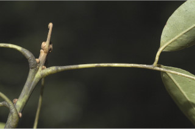
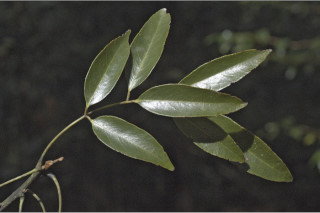
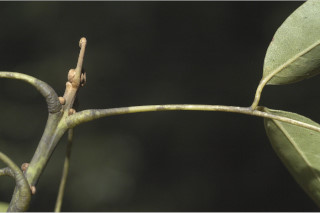
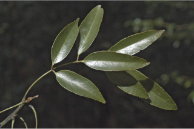

| Leaves : | Leaves compound , imparipinnate , alternate , spiral and clustered at twig ends; stipules caducous ; petiole 2.5-5.5 cm long, pulvinate ; rachis 6-11 (-25) cm long; petiolule 0.4-0.8 cm long, canaliculate ; leaflets 7-9 pairs, subopposite , lamina 4.5-10 x 2-3.5 cm, usually elliptic-lanceolate , sometimes the terminal one narrow obovate , apex acuminate sometimes caudate - acuminate with blunt tip in young trees , base acute , margin undulate in young trees , coriaceous , glabrous ; midrib canaliculate above, stout beneath; secondary_nerves ca. 7 pairs, slender, often impressed above in thick mature leaflets ; tertiary_nerves reticulate . |


 


